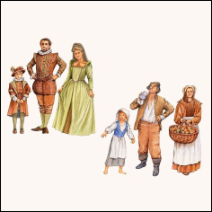
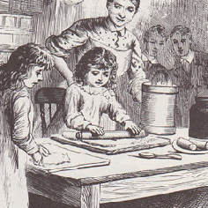
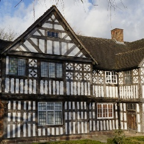
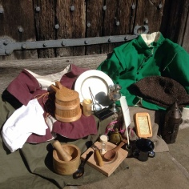
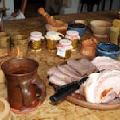

Copyright © Ford Green Hall - All rights reserved


Ford Green Road, Smallthorne, Stoke-on-Trent, ST6 1NG
fordgreenhall.museum@gmail.com
Phone 01782 537696


Ford Green Hall has a friendly atmosphere soaked in history. Our experienced staff bring the past to life through a variety of enjoyable workshops and tours. Take a tour of the hall and garden (weather willing!) and discover all about everyday lives of the Tudors and Stuarts through hands on learning and opportunities for students to practice historical enquiry skills.
Over many year we have developed an exciting range of themed workshops for Foundation and Primary Stage pupils. These practical sessions are all led by a facilitator and are ever popular with visiting schools.
Secondary Schools/Higher Education
Ford Green Hall is an inspirational setting for all manner of visits from history through to arts, design and creative writing. Book a guided tour or arrange a self-guided tour today to explore a rare and valuable educational resource.
Booking:
Post: Ford Green Road, Smallthorne, Stoke-on-Trent, ST6 1NG
Telephone: 01782 537696
Email: fordgreenhall.museum@gmail.com
Suitable for KS1 and KS2 pupils.
Workshops available for half day or full day visits.
1/2 day visit includes House Tour with single Workshop and costs £4.50 per child.
Full day visit includes House Tour with three workshops and costs £7.00 per child.
Meet Samuel Pepys and hear his first hand experiences during the fire. Lots of interaction!

Explore the differences in society in the Tudor and Stuart period and where the Ford families status was. Dressing up, crime and punishment and even a period dance!
Many everyday objects are mentioned in Shakespeare’s plays. Handle replica objects from the age of Shakespeare and find out what they were for.

Hear the story of the Gingerbread Man, Make a finger puppet, play a Gingerbread man game.
Take a tour of the Hall and listen to Nursey Rhymes connected to the 17th Century.

A tour of the Hall looking at everyday life in the Tudor and Stuart period.

A 17th Century tour of the Hall, focusing particularly on fire and its uses along with all the inherent dangers of fire in a timber framed house from the period.
Find out what school life was like for William Shakespeare. Learn how to write with a real quill pen.

Our Tudor and Stuart object session can be tailored to suit the topics your class is studying. From domestic objects and military life to Medicine and superstition.

Find out about food! How was in cooked? Where could you buy it? How was it preserved? Smell herbs and spices and make a marzipan fruit to take home.(please let us know about any allergies)
A Tudor and Stuart Loans Box is available for hire at a cost of £20 per half term